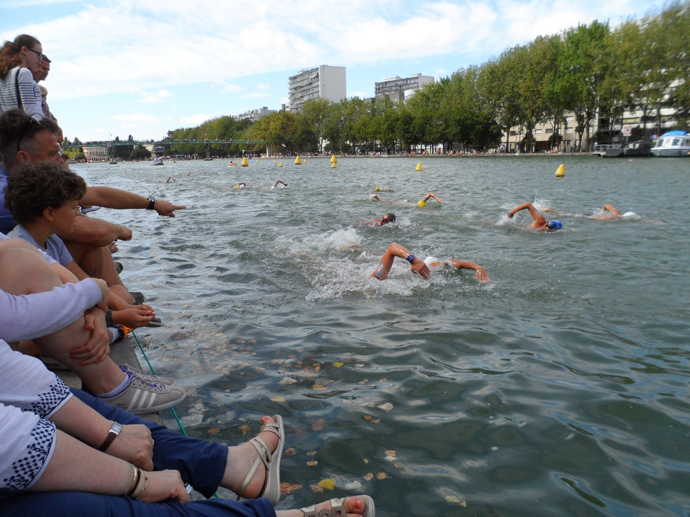
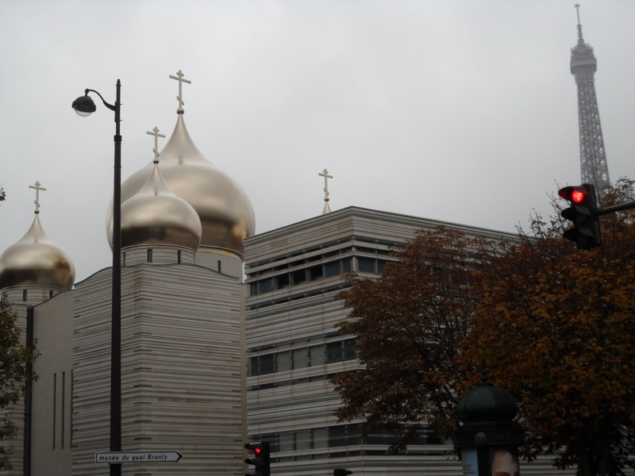
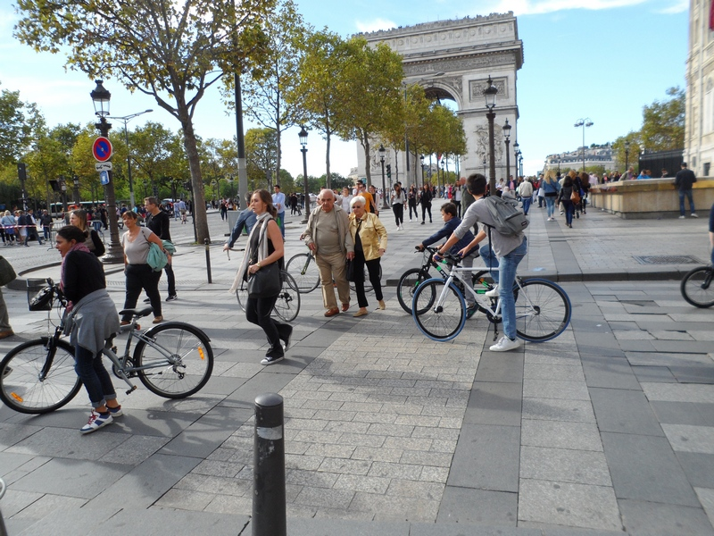
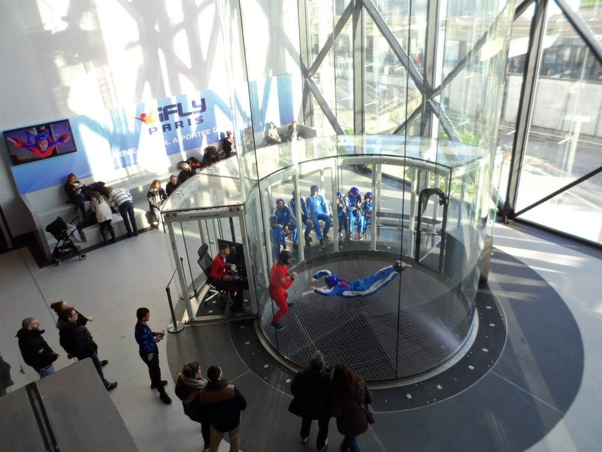

While waiting for Paris City Hall's authorisation to allow public swimming on the basin at La Villette (some say it could come about in the summer of 2017) swimming fans could only watch well-trained swimmers participate in the 1.25km, 3km and 5km races along the Bassin de la Villette on Sunday 28 August 2016. Among those who took part were Marc-Antoine Olivier, who won the bronze medal in the men's 10km marathon swim in open-water at the Rio Olympics and Aurelie Muller, who came out second in the women's section of the same event but was later disqualified on technical grounds.
The organizers had earlier announced that the public would be allowed to swim in the basin after the three races were over but it was called off at the last minute. (Above picture was taken on 28 August 2016.)
(Source: pgoh13.com)

The new Russian Orthodox cathedral called La Cathédrale de la Sainte-Trinité (Holy Trinity Cathedral) was inaugurated on October 19, 2016. It stands at the junction between Avenue Rapp and Quai Branly and is a short distance from the Eiffel Tower. The cathedral, funded by Kremlin at a cost of more than 100 million euros, also houses a cultural centre and a school. The complex is legally part of the Russian embassy in France.
Above picture was taken from Pont de l'Alma on October 25, 2016.
(Source: pgoh13.com)

The Champs Elysees and much of the rest of Paris was taken over by cyclists, joggers, roller-bladers and pedestrians on Sunday 25 September 2016 as it was the "Journée sans voiture" (Day without cars). This is the second year that the Paris City Hall has undertaken such an event and it is likely to become a yearly affair. (Above picture was taken along the Champs Elysees on 25 September 2016.)
(Source: pgoh13.com)

(December 3, 2016) When visiting La Cité des Sciences you might want to take a look at the new leisure-cum-shopping complex called Vill'Up which was open on November 30, 2016. The entrance to the mall itself is to the left as you head for the main entrance to La Cité des Sciences. But if you are already inside La Cité there is no need for you to come out again. You can enter it from La Cité des Enfants end.
Among the shops and restaurants there are Marks & Spencer, Cultura and Indiana Café. It is open 7 days a week from 10h00 to 20h00 (the restaurants and cinema stay open till 01h00).
Want to have the sensation of parachuting (picture below)? You will be able to do so here at the iFly center at the end of the mall. But be prepared to pay from 50 to 60 euros for the experience. Cost and reservation from their website here. The minimum age requirement is 5 years.